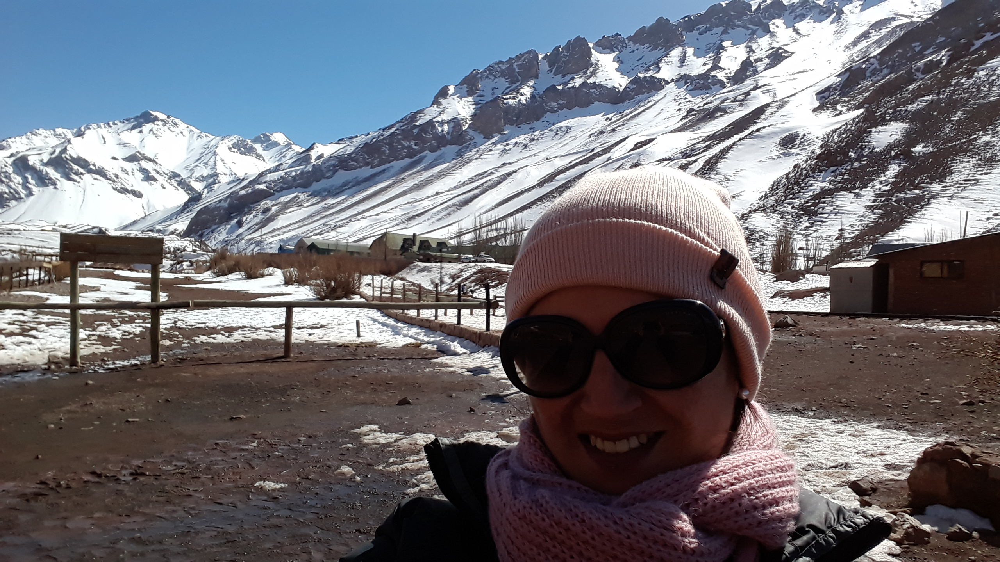

¡Hola, mi nombre es Iris Zamora!
Tengo 32 años, soy de Rosario, Santa Fe, Argentina. Orgullosa mamá de Juan Ignacio. En mis años post secundaria ingrese a la Universidad Nacional de Rosario a estudiar la carrera de Contadora Publica, la cual abandone años despues, habia elegido algo que nunca habia soñado ser. Por ir en busca de mis sueños hace 3 años decidí renunciar a mi trabajo como operadora de monitoreo para emprender en un negocio propio, pero por cosas de la vida no funciono como esperaba. Durante la pandemia empece a tener curiosidad por la programación y el desarrollo web. Recien este 2022 me empece a formar y éste blog es la primera pagina de muchas, espero que les guste.